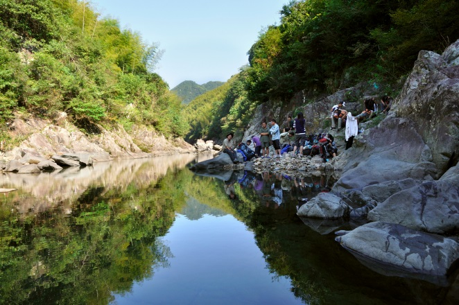
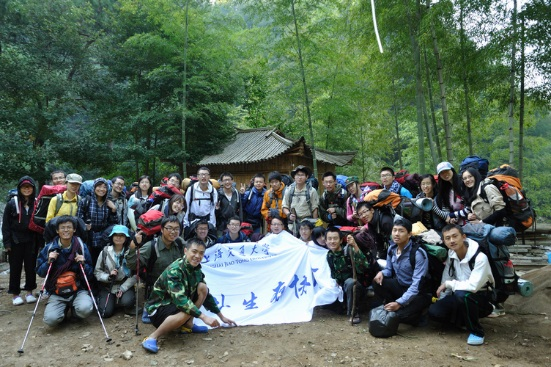

发信人: MrYang (our2008), 信区: outdoor
标 题: 野协五一活动之浙东大峡谷
发信站: 饮水思源 (2013年04月20日00:01:50 星期六)
【线路简介】
 screen.width - 200){this.width = screen.width - 200}">
浙东大峡谷的线路包括清水溪和浑水溪，我们走的是其中的清水溪。
清水溪，又名逐步溪，一般驴友意识中的“浙东大峡谷”就是指的清水溪这段，长度适中
，水深及膝，是一条经典的徒步溯溪线路。峡谷未做开发，谷底开阔，落差很小，小水潭
无数，清可见底。
 screen.width - 200){this.width = screen.width - 200}">
【出行时间】4月28晚出发-4月30日晚返回
【线路难度】
强度：★★★谷底地势开阔平坦，行程不长，起伏不大
难度：★★★★岩壁湿滑，一路攀爬，难免湿身；若遇水涨，难度更大
风景：★★★★★缘溪而行，水清见底，小水潭无数，极赞~
总体来说，线路的体能消耗并不大，难点在于第一天下午溯溪过程中几个攀爬岩壁的点
。在天气晴好的情况下，难度更低，风景也极佳。若遇下雨水涨，则攀爬难度增加很多。
*这次活动由于经常涉水，请生理期的女生谨慎选择。
【成员组成】
成员总人数：33人（包括领队等）
领队：罗人和
副领队：陈飞帆
押队：杨瑞
【行程安排】
第一天
6:30 起床、收拾装备、早餐（冷餐）
8:00 拔营，向峡谷方向进发，路上会有一个垂直100米，长度400米左右的上坡，略有难度
，之后是600米左右的下坡
11:00 到达峡谷，地方开阔，在这里休息休整,吃午饭（冷餐）
11:30 继续出发，沿清水溪溯溪而上
16:00 到达营地，生火做饭，晚上天气好的话来一点篝火吧
21:00 进帐睡觉
第二天
6:30 起床、收拾装备、早餐（热餐）
8:00 拔营,沿溪而上，走山路，途径界桥至逐步村
11:30 到达逐步村，腐败
【费用及装备】
个人装备：背包（包罩）、防潮垫、登山杖、睡袋、头灯及备用电池、军刀、雨衣、手套
、衣物（备用一套以供换洗的，外套）、防晒物品、防水保护用具、餐具、洞洞鞋或军胶
、现金少许、身份证、学生证、交通卡、爪机及备用电池。
共用装备：帐篷（防风绳、备用地钉）、地席、打火机、火柴、垃圾袋、炉头、套锅、GP
S、地图、指南针、线路绳、主锁(5个) 、安全带(3个)。
药品：云南白药、蛇药、风油精、清凉油、创可贴、止血带
车费：150元
营地费：10元
保险：10元
腐败：40元
装备费：50元（帐篷15元，气罐炉头10元，背包15，睡袋5，防潮垫5）
其他（资料打印、领队地图、给司机师傅买吃的等）：5元
总计：265元（会员）、295（非会员）多退少补
声明：准备会后如退出本次活动，若有后备队员补充空缺，扣除保险费其余退还；若在出
发当天退出本次活动，则扣除保险费和车费之后余额退还。
【报名方式】
即日起，发送“姓名+性别+年级+是否有户外经验+身份（非会员、会员或干事）”到杨
同学13482372621处即可。
报名截止时间：4月20日（周六）晚10点
成员招募:会考虑是否会员、男女比例、新老会员比例等问题，在同等条件下，先报先得~
由于五一活动火爆，人数有限，我们会在人员报满时提前截至，如果没有报上也不要气馁
，下一次活动会优先考虑~
【注意事项】
1.上面的只是一些基本信息，关于这次线路的更多细节、装备准备等问题都会在准备会上
详细地告知。
2.以上行程为基本行程，领队有权根据天气、队员状态等情况调整活动计划，不承担由此
造成的损失和责任。
3.野外活动不同于一般旅游，参加活动的队员须听从领队和向导的组织安排，严禁野外用
火吸烟，严禁擅自离队，所有活动安全第一，对于无视指挥所造成的后果由自己负责。
4.无论什么时候，一旦觉得事情应付不来，就要讲出来。艰难的路段最好请人帮助，甚至
放弃不爬，也比发生危急情况要好。
5.徒步过程中应发扬团队精神，途中留意同伴情况，危险地段互相提醒或协助通过。
6. 迷路时应折回原路，或寻找避难处静待救援；除保持体力外，并安抚队员平稳情绪。
7.提倡环保，注意保护环境，请将垃圾带离及小心用火，切勿乱丢烟蒂，引起山火。
8. 安全第一，切忌个人英雄主义，要量力而为，集体活动以大局为重，不搞个人主义，不
得单独行动。
9.请守时，对自己负责，对他人负责
10.有其他疑问，可以联系领队罗同学（18621364145），押队杨同学（13482372621）.
--
※ 来源:·饮水思源 bbs.sjtu.edu.cn·[FROM: 58.196.168.97]
|